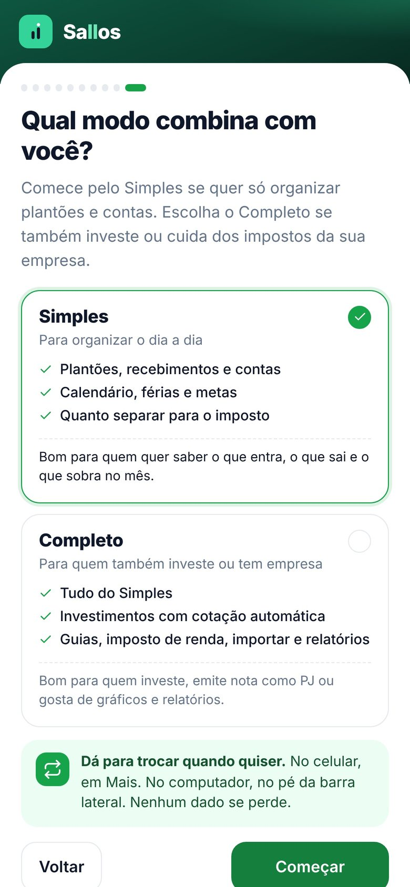
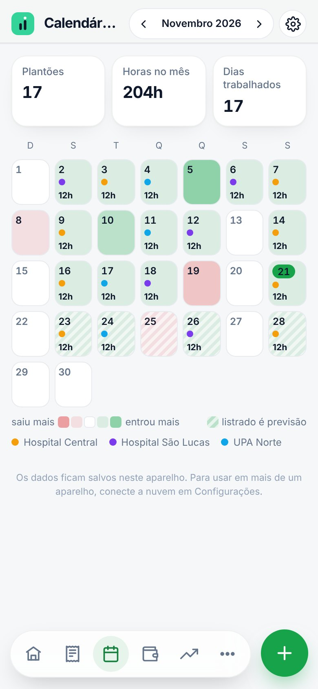
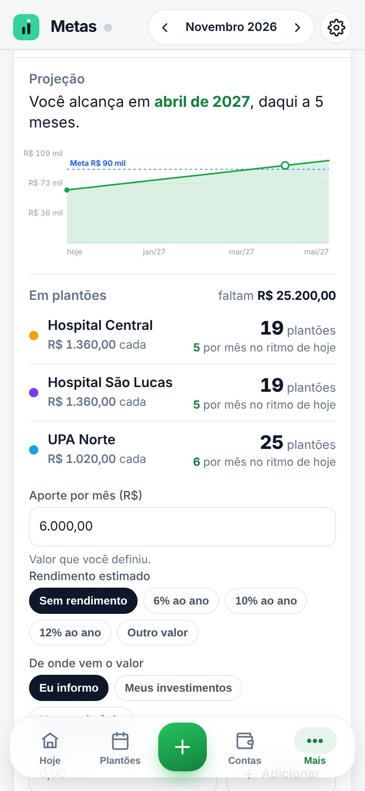
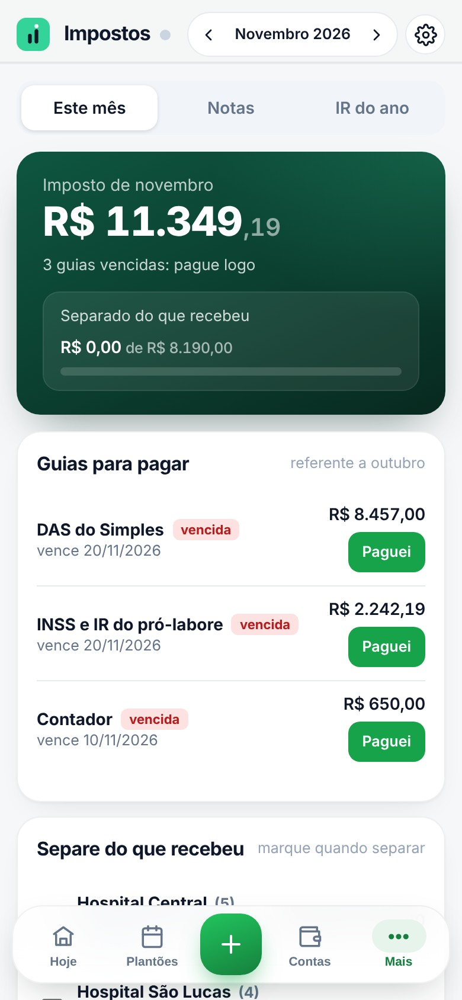
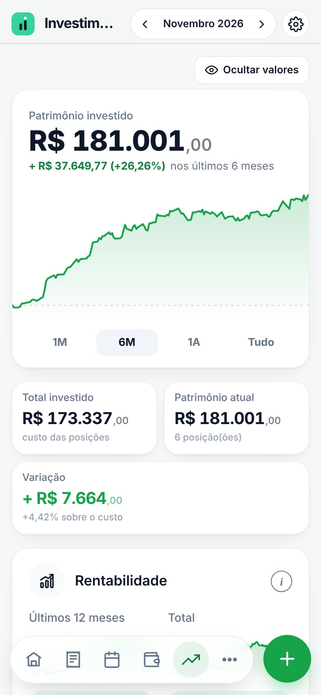

As finanças do médico, organizadas.
Abra o app e veja o que pede atenção hoje: o plantão do dia, o dinheiro que cai e a conta que vence. Plantões, hospitais, contas, impostos e investimentos num lugar só.
Funciona no celular e no computador. Comece no modo Simples e passe para o Completo quando quiser.
Feito para a rotina de quem dá plantão
Vários hospitais, pagamentos em datas diferentes, Pix como sócio, nota pela empresa. O Sallos entende isso sem você precisar de planilha.
Seu dia em uma tela
Ao abrir, o app mostra o que pede atenção hoje: o plantão do dia e o de amanhã, o dinheiro que deve cair e as contas que vencem.
- Um toque em "Recebi" ou "Paguei"
- Quais contas dá para pagar com o que já caiu
- No começo do mês, um resumo de como foi o anterior

Do seu jeito: Simples ou Completo
Na primeira vez, um guia rápido mostra o app todo. No fim, você escolhe como quer usar. Dá para trocar quando quiser, sem perder nada.
- Simples: plantões, recebimentos, contas e quanto separar para o imposto
- Completo: tudo isso, mais investimentos, guias, notas e imposto de renda
- Os mesmos dados nos dois modos

Seus plantões e quanto falta cair
Lance o plantão em segundos. Se for fixo, escolha os dias uma vez e o app lança os próximos sozinho.
- Faturamento separado por hospital
- O que já devia ter caído aparece no topo, com o botão Cobrar
- Bruto, imposto e líquido de cada plantão

Atrasou? Cobre pelo WhatsApp
Quando um pagamento passa da data, aparece o botão Cobrar. O app junta os plantões atrasados daquele hospital e monta a mensagem com as datas e o total.
- Salve o WhatsApp do financeiro uma vez
- A mensagem vai pronta e dá para editar antes
- Quem envia é você, pelo seu WhatsApp

O mês inteiro no calendário
Cada dia mostra os plantões, os recebimentos e as contas. Toque num dia para ver tudo e marcar o que já aconteceu.
- Horas e dias trabalhados no mês
- Barra verde quando entrou mais, vermelha quando saiu mais
- Dias de férias marcados em azul
- Seus eventos, como dentista ou aniversário, em roxo

Férias sem susto
No calendário, toque em Férias e escolha o período. Antes de sair, você já sabe o que muda no seu mês.
- Quais plantões você precisa passar
- Quanto deixa de receber
- Se as contas do mês continuam pagas

Vale a pena esse plantão?
Ofereceram um plantão? Digite o valor e as horas. O app mostra quanto entra na sua conta, quanto dá por hora e se está acima da sua média.
- Imposto já descontado
- Comparação com o lugar que paga melhor
- Quantos plantões como esse pagam a sua meta
Recebe, paga e sobra
A tela Contas mostra o mês em 3 passos: o que você recebe, o que paga e quanto sobra para investir. Cadastre as contas fixas uma vez e importe a fatura do cartão: o app separa cada compra por categoria.
- O que pagar agora com o que já caiu
- Gastos de saúde e escola separados para o imposto de renda
- Nota fiscal guardada junto com o gasto

Metas contadas em plantões
Reserva, carro, viagem. Diga quanto quer juntar e o app mostra quantos plantões em cada hospital pagam a meta, e quantos por mês até o prazo.
- Projeção de quando você chega lá
- O que você guarda e o que rende
- Teto de gastos com aviso

Impostos sem susto
O app calcula as guias, avisa o vencimento e mostra quanto separar de cada recebimento. Também lembra das notas para emitir e estima o seu imposto de renda.
- Simples Nacional e carnê-leão
- Caixinha do imposto
- Estimativa da restituição

Investimentos com cotação automática
Ações, fundos imobiliários, renda fixa e exterior. Os preços se atualizam sozinhos e você vê a evolução do patrimônio como numa corretora.
- Importa nota de corretagem, print ou planilha
- Rentabilidade no ano e no total
- Carteira em dólar convertida para real

Veja o Sallos funcionando
Menos de quatro minutos mostrando o dia a dia: escolher o modo, ver o que fazer hoje, cobrar um pagamento atrasado, lançar plantão, planejar as férias, decidir se um plantão vale a pena, ver quanto sobra e investir.
Comece em dois minutos
Não tem loja de aplicativo nem cadastro longo.
Abra no celular
Entre em sallos.com.br pelo navegador do celular.
Coloque na tela inicial
Assim ele abre como um app, em tela cheia.
iPhone: no Safari, toque em Compartilhar e depois em "Adicionar à Tela de Início". Android: no Chrome, toque nos três pontinhos e depois em "Instalar app".Lance o seu mês
Cadastre os hospitais, os plantões e as contas fixas. Em poucos minutos o mês aparece organizado.
Seus dados são seus
O Sallos foi pensado para quem não quer expor a vida financeira.
- Ficam no seu aparelhoTudo é salvo no celular ou no computador que você usa.
- Nuvem só se você quiserLigando a nuvem, os dados ficam numa conta só sua, para usar em mais de um aparelho.
- Trava e cópia de segurançaSenha para abrir o app e um arquivo de cópia para guardar onde quiser.
- Excluir quando quiserUm botão apaga sua conta e todos os seus dados. Veja a Política de privacidade.
Perguntas frequentes
Preciso entender de contabilidade?
Não. O app usa palavras do dia a dia: quanto entrou, quanto saiu, quanto separar para o imposto. As contas ficam por conta dele.
Achei o app completo demais. Tem um jeito mais simples?
Tem. No modo Simples, o app mostra só plantões, recebimentos, contas e quanto separar para o imposto. Quando quiser mais, troque para o Completo nas Configurações (a engrenagem no topo), em Modo do app. Nenhum dado se perde.
Como funciona o modo Férias?
No calendário, toque em Férias e escolha o primeiro e o último dia. O app mostra os plantões que caem no período, quanto você deixa de receber e se as contas dos meses seguintes continuam pagas. Se quiser, salve as férias no calendário e tire da agenda os plantões que vai passar.
Funciona no iPhone e no Android?
Sim. Abra sallos.com.br no navegador e coloque na tela inicial. No computador, é só abrir o mesmo endereço.
Substitui o meu contador?
Não. O Sallos organiza seus números e estima os impostos para você não ter surpresa. Ele também gera um relatório para mandar ao contador.
Ajuda a decidir se aceito um plantão?
Sim. Em "Vale a pena?", digite o valor e as horas. O app mostra quanto entra já sem o imposto, quanto dá por hora comparado com a sua média e quantos plantões como esse pagam a sua meta.
Dá para usar com vários hospitais e formas de pagamento?
Sim. Cada hospital fica numa caixa própria, com nota pela sua empresa, Pix como sócio ou carteira assinada, cada um com a sua data de pagamento.
Um hospital atrasou o pagamento. O app ajuda?
Sim. O que passou da data aparece em vermelho, com o botão Cobrar. O app monta a mensagem com os plantões e o total e abre o WhatsApp do financeiro do hospital.
Onde ficam os meus dados?
No seu aparelho. Se você ligar a nuvem, também numa conta só sua, que só você acessa. Dá para excluir tudo quando quiser. Detalhes na Política de privacidade.
Organize o seu próximo mês de plantões
Abra o Sallos, lance seus plantões e contas e veja o mês inteiro em uma tela.
Começar agora